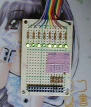

おれたちはとんでもない思い違いをしていたようだ。 キバヤシ
なんか世の中的にはWindowsは2000やXP（つまりNTカーネル）になって， パラレルポートが叩けなくなったため，同人ハード屋さんには辛い時代になった，とか言われてます． それで何やるかと思えばLinux入れてrootになって/devをアクセスして･･･． ちょっと待った．なんでI/Oが直接叩けないからってNTではパラレルポートが使えない （或いはドライバ書かないと使えない）って断言しちゃうんでしょう． 挙句の果てには自分の無知を棚にあげ，「Windowsは使えない」とか「小さな親切大きなお世話」とか． デバイスマネージャで良く見てください． 標準ドライバが入ってるじゃないですか． "LPT1"ってデバイスができてるじゃないですか． こいつを使ってパラレルポートにアクセスしてみるですよ． UNIX同様にファイルデスクリプタ経由で読み・書き・I/Oコントロールするですよ？
// ここまで読んだ C++ user
そんなわけでインターネット上であまりにも正しい情報が欠如していたので， ついついムキになってキーボードを叩いてみました． でも，考えてみたらこれだけ情報が出てない状況なら雑誌で普通に記事一本書いたほうが得だったかもしれません． 未だにハードウェア系の雑誌は「NTでパラレルポート」はネックみたいに書いてますから．
まぁ，無駄話はこの辺で終わりにしておいて，まずは必要となる開発ソフトについての情報から． 資金について心配してる学生さん，安心してください．すべて無償で揃います． まず必要になるコンパイラですが，cygwin環境を導入してちゃちゃっとgccを使えるようにしちゃって下さい． わからないって人はGoogleに尋ねてみましょう． それでもわからなければあなたはコンピュータと付き合うには不向きなので諦めましょう． もちろんVisualC++やその他の商用コンパイラを既に持ってるって人はそれで構いません．
次に必要になるのはWindowsのDDKです． Microsoftのサイトから入手できるはずです． これも詳細は他のサイトに任せます． ここで必要になるのはDDK自身ではなく，付属する一部のヘッダファイルです． 具体的には"devioctl.h"と"ntddpar.h"で，I/Oコントロールの際に必要になる構造体や定数が定義されています． まぁ，無くてもわかってればどうにでもなるんですが，わかってなければ必要です．
開発環境的にはこれだけでＯＫです． 以下の説明ではWindows XPとgccの組み合わせで，実際に検証した事を解説しています． うまくいかない場合には，原因を切り分けるため同じ環境で試してみると良いでしょう．
驚く程(回路図が)簡単だったんです とよぞう
とりあえず一番簡単なアクセス方法を試しましょう． まずはデバイスマネージャで"LPT1"が存在している事を確認してください． まぁ，プリンタポートが実在してるなら間違いなく存在するはずです． いきなり実例を出してしまいましょう．
#include <windows.h>
#include <stdio.h>
int
main
(int argc, char **argv)
{
HANDLE hPort = CreateFile("LPT1", GENERIC_READ | GENERIC_WRITE,
0, NULL, OPEN_EXISTING, 0, NULL);
if (INVALID_HANDLE_VALUE == hPort) perror("CreateFile");
UCHAR dt = 0xaf; // 出力したいデータ
DWORD dwWritten;
if (TRUE != WriteFile(hPort, &data, 1, &dwWritten, NULL))
perror("WriteFile");
return 0;
}
 回路が正しければ，右の例のように出力した値が信号に反映されるはずです． 左から点灯を１，消灯を０として"10101111"． つまり"0xaf"ですね．
右の回路は８ビットのデータ出力それぞれにLEDを割り当て， 入力側の信号は標準ではすべてプルアップでＨレベルになっていますが， 下のコネクタ部分を用いてGNDとショートさせる事で各々Ｌレベルに設定する事もできます． 電源は外から取る事も，Ｈ状態になってる出力信号を入用する事も可能です． まぁ，回路自体も初歩の初歩って事ですね．
どうでしょう？ 実は9x系でI/Oポートを直接叩くよりもずっと簡単で美しくないですか？
画面は青かった anonymous
前項では触れませんでしたが， 単純に上の例に従った場合多くの人がプログラム実行後に処理が戻ってこなくなったのではないでしょうか？ ネットを検索すると「ハングします」とか表現している人が多く見受けられますが， これは正確には「ハングアップ」ではなく「ブロック」です． キチンとコンピュータサイエンスを学んだ人にとっては当たり前の事なのですが， 趣味でしかコンピュータと付き合っていない場合には知る機会も少ないのかもしれません． CPU使用率や他のプログラムの動作を見てみればわかるでしょう． 問題のプログラムは大人しく寝ているだけだと思います．
これは，デスクリプタに対し読み書きしようとした際， 対象のデバイスが準備できていない場合， 効率の良いマルチタスクを行うためにシステムがそのスレッドをスリープさせるために起こる現象です． もちろん永久に止まっているわけではなく， デバイスの準備ができればすぐに処理は再開されます．
つまり，ブロックしているという事は，書き込みの準備ができていない，という事になります． では，なぜ準備ができていないと判断されているのでしょうか？ 次のプログラムを見てください．
#include <windows.h>
#include <stdio.h>
#include "devioctl.h"
#include "ntddpar.h"
:
(省略)
:
PAR_QUERY_INFORMATION info;
if (FALSE == DeviceIoControl(hPort, IOCTL_PAR_QUERY_INFORMATION,
NULL, 0, &info, sizeof(info),
&dwRead, NULL))
perror("QUERY_INFORMATION");
printf("Status: %x\n", info.Status);
:
(省略)
:
おそらく画面には"Status: 80"以外の出力が出てくるのではないでしょうか？ "ntddpar.h"を見ればわかるのですが80はPARALLEL_SELECTEDを意味しますが， それ以外の値はPOWER_OFFやらNOT_CONNECTED，BUSYなどを表しています．
では具体的にはどうしたら良いか，というとパラレルポートの入力信号のうち， BUSYとPEをLに，SELと/ERRをHにしてやる必要があります． /ACKはどちらでも構いません． それぞれの信号の値とStatusへの影響を表にまとめてみました．
| 信号名 | レベル | 主な影響 |
|---|---|---|
| BUSY | H | PARALLEL_BUSYが立ってブロック |
| PE | H | PARALLEL_PAPER_EMPTYが立ってブロック |
| SEL | L | PARALLEL_SELECTEDが下りてブロック |
| /ERR | L | Status上問題はないがブロック |
表１．入力信号とステータス |
修行が足りません． 名無しさん＠Ｅｍａｃｓ
D0:7の出力方法はわかりましたが，他の信号線についてはどうしたら良いでしょうか？ 答えは前項に既に半分ありますね．
入力信号に関しては前項のIOCTL_PAR_QUERY_INFORMATIONを発行する事によってその値を読み取る事ができるわけです． ただし，ここで若干の問題があります． それは信号とステータスの状況が完全には１対１に対応していない，という事です． 例えば，全ての信号がHレベルになっている場合には PARALLEL_SELECTED | PARALLEL_BUSY | PARALLEL_PAPER_EMPTYが期待されるわけですが，実際には PARALLEL_SELECTED | PARALLEL_BUSY | PARALLEL_POWER_OFFが返ってきます． 推測でしかないのですが，おそらくこれらの信号線はPC側でプルアップされていて， 実際に接続されていない場合には全ての信号はＨレベルとして認識されるのではないかと思います． そのためWindowsではこの信号の状態を電源断と判断しているのでしょう． 試しに/ACK信号をLレベルに落としてみると，期待される値が返ってきます．
また別の問題として，この方法では/ACKと/ERRについて個別に状態を判別する事ができない，という点もあります． もちろんさきほどの例のように他の信号がすべてＨレベルになっていれば/ACK信号によってステータスに変化が現れますが， それは特殊な例に過ぎません．結果として入力は最大３ビットしか利用できないわけです．
では出力はどうでしょう？ 一応次のようなAPIが用意されています．
:
(省略)
:
if (FALSE == DeviceIoControl(hPort, IOCTL_PAR_SET_INFORMATION,
&info, sizeof(info), NULL, 0,
&dwRead, NULL))
perror("SET_INFORMATION");
:
(省略)
:
が，ドキュメントによるとここで指定できるのはPARALLEL_INITだけのようです． 実際に他のパラメータを指定すると「パラメータが間違っています。」といった内容のエラー通知が返ってきます． また，実際にPARALLEL_INITを指定して呼び出したところで，出力にはまったく変化が現れませんでした． もっとも何も指定せずに呼び出してもエラーが返ってくるので結局INITを制御する事はできないんですけどね （ちなみに標準状態では/AUTOFD,/INITがＨレベル，/SELINがＬレベルになっています）．
そういったわけで，これらの方法を使う場合には出力はD0:7の８ビット， 入力はBUSY,PE,SELの３ビットしか利用する事ができない，という事のようです．
大盛りねぎだくギョク。これが通の頼み方。 吉野家通
長調でも短調でもない音楽，それがモードです･･･という話ではなく･･･ パラレルポートにはEPPやらECPやら，いろんなモードがあるらしい． 詳しい人ならご存知の事と思います． では，今動作してるこのモードはどうなっているのでしょう？ また，モードの変更は可能なのでしょうか？ 現在の動作モードについて問い合わせる方法は以下の通りです．
:
(省略)
:
PARCLASS_NEGOTIATION_MASK mask;
if (FALSE == DeviceIoControl(hPort, IOCTL_IEEE1284_GET_MODE
NULL, 0, &mask, sizeof(mask),
&dwRead, NULL))
perror("GET_MODE");
printf("r:%04x/w:%04x\n", mask.usReadMask, mask.usWriteMask);
:
(省略)
:
恐らく"r:0004/w:0001"と出力されるでしょう． これは，読み込みモードとしてNIBBLEモード， 書き込みモードとしてCENTRONICSが選択されている事を表します． 逆にこれらを設定する方法もあります．
:
(省略)
:
if (FALSE == DeviceIoControl(hPort, IOCTL_IEEE1284_NEGOTIATE
&mask, sizeof(mask),
&mask, sizeof(mask),
&dwRead, NULL))
perror("NEGOTIATE");
:
(省略)
:
これまでは主にCENTRONICSによる出力を説明してきたわけですが， これらの設定を変更する事で，さらにいろいろな処理が可能と思われます． が，仕様だけで実装はされていない可能性も高そうです． ぜひ調べた方はレポートしてくれると，何かの際に幸せを共有できるかもしれません． ちなみにNIBBLEモードでReadFileを呼び出した時の挙動は「ファンクションが間違っています」でした． 9x系ならサポートしているとの情報もありますが， 自作ハードの制御などを行うのでしたらハード側にNIBBLEモードのプロトコルを実装するより， 使える信号を使った独自のハンドシェイクを行うほうが簡単でしょう．
もうちっとだけ続くぞい 亀仙人
CENTRONICSモードでは， 入力として判別可能な信号は全て固定の値にしておかないと出力でブロックしてしまいました． つまり回路側でなんらかの工夫をする，あるいは読み書きをうまく時分割したプロトコルを用いる， などの工夫をしない限り，双方向の通信を行うのは困難です．
そんなわけで，IOCTL_IEEE1284_NEGOTIATEで設定できる他のモードを調べてみたのですが， IEEE_COMPATIBILITYというモードがCENTRONICSモードよりも便利である事がわかりました． このモードではBUSY信号がＨレベルの時には処理は成功するのですが， 書き込んだバイト数として０を返し，実際の出力にも値は繁栄されません． 逆にＬレベルになっている時には処理は失敗する（「要求されたリソースは使用中です。」のエラーが返る）のですが， 書き込もうとした値は正常に出力に繁栄されます． つまりBUSY信号だけをＬに落としておけば，書き込みに関しては自由に行う事ができます． また，この状態で入力を調べてみると，/ACK信号がPARALLEL_BUSYで判定できる事がわかります． つまり入力についても/ACK，PE，SELの３ビットが利用できるようです．
がいしゅつだったらすみません。怖い世の中です。 anonymous
と言う訳で，どうだったでしょうか？ 信号が全て自由に扱えるわけではない，という点で若干の不自由さが残るものの， 別段トリッキーな処理もせず，わりと簡単に利用できるじゃないか， というのが僕の感想です． 不自由とは言え，これだけ使えれば各種ROMライターやCPLDのダウンロードケーブルなどを制御するには十分です． 僕の場合，PICで制御予定のICに対して，予め挙動をチェックしてPIC側のプログラムの仕様を固める，といった目的に利用してます．
それと，今回説明した部分は全てmsdn libraryを調べればわかる範囲の知識です． 具体的にはこの辺を参考にしました． さらに詳しい情報が知りたい人は本家本元の情報を読んでみて下さい．
あと，パラレルを使う際の注意点なんですが， 最近のマシンではパラレルポート自体軽視されてるようで， 電気的な仕様がかなりいい加減なマザーも少なくないようです． Ｈレベルが妙に低かったり，信号の立ち上がりが鈍かったり，電流ほとんど流せなかったり． ちゃんとした制御に使うなら，信号はそのまま使わずに適当なバッファを通し， 電源は外部から供給してやるのが吉です．
ということで，久々のホームページ更新でした．
たとえ世間がクリスマスでもあなたはシステムの メンテをし続ける義務があります。 上司
rev 1j ... 初公開版
rev 2j ... 表１の修正，"他の信号線の制御"をより正確に記述
rev 3j ... IEEE_COMPATIBILITYを追加